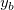

/math-e57fa423968c1523c644fbc29d451dfc.png "y''") は、それぞれ曲線の一次微分と二次微分です。隣接平均法スムージングが算出された後、各データポイントの二次微分が計算されます。次に、全ての二次微分でしきい値を通過する値を使用して2項式フィットを行います。フィットした基線を元に、一番フィット曲線に近いポイントをアンカーポイントとします。
は、それぞれ曲線の一次微分と二次微分です。隣接平均法スムージングが算出された後、各データポイントの二次微分が計算されます。次に、全ての二次微分でしきい値を通過する値を使用して2項式フィットを行います。フィットした基線を元に、一番フィット曲線に近いポイントをアンカーポイントとします。
データから自動で基線を検知する方法は次の4つです：ユーザ定義は基線モデルの全体的な目的で使われ、XPSモードはX線の電子放出素ペクトロム用に使われます。また、重み付けした終端、直線があります。 (基線の作成目的には使えません。)定数の基線を定義したり、既存の基線のポイントをデータシート内で定義する事も可能です。
アンカーポイントを見つけるために4つの手法が準備されていますが、「自動的に基線を検知する」には、次の2手法が使われています。
この方法は、基線の下の面積はピークの下の面積より曲率が少ないことを元にしています。曲線の曲率は次のように定義されます。
と は、それぞれ曲線の一次微分と二次微分です。隣接平均法スムージングが算出された後、各データポイントの二次微分が計算されます。次に、全ての二次微分でしきい値を通過する値を使用して2項式フィットを行います。フィットした基線を元に、一番フィット曲線に近いポイントをアンカーポイントとします。
この方法は、基線が信号の下向きピークを元に作成される場合に有効です。
Savitzky-Golayスムージングが算出された後、各データポイントの二次微分が計算されます。次に、二次微分曲線の全ての値は局所最大方式により検出されます。二次微分したピーク値で、一番フィット曲線に近いポイントをアンカーポイントとします。
この方法では、Savitzky-Golayのスムージングアルゴリズムを使用します。二次微分のしきい値とは他にこの方法は一次微分のポイントのしきい値を超えたものも含みます。通常、より小さな一次微分は元のデータセットに小さな変化を与えるだけなためです。
この方法は基線がほぼ定数の時、より効果を発揮します。その場合、基線の一次と二次微分はほぼ0になります。
このモードはX線電子放出スペクトル分析のために設計されました。このモードでは、2つのオプション、ShirleyとTougaardがあります。
Shirleyアルゴリズムはスペクトルの情報を使用してバックグランドを作成し、データの変更に敏感な状態を作る事です。Shirleyアルゴリズムの中で特に重要なことは、バックグランドの特定をピークの下の面積で行い、バックグランドの強度は/math-4e84da3481926f7b0ee2e86ea08806fe.png "B(E)") 、エネルギーは
、エネルギーは/math-3a3ea00cfc35332cedf6e5e9a32e94da.png "E") です。
です。
ここで、はエネルギーのビンの中で上部にある終点の強度です。ダイアログでは、このパラメータは最終高さと呼ばれます。散布的なファクターに関する値は次のように算出されます。
![k_n=\frac{I_{min}-I_{max}}{\int_{E_{min}}^{E_{max}}dE'[I(E')-I_{max}-B_{n-1}(E')]}](../images/Algorithm(PA)/math-728f59a444cfbe06fad8568ccf82064b.png "k_n=\frac{I_{min}-I_{max}}{\int_{E_{min}}^{E_{max}}dE'[I(E')-I_{max}-B_{n-1}(E')]}")
Shirley基線は指定された範囲、[, /math-cdc0075bc9741ac77d7a35a4bac6468a.png "E_{max}") ]の外では0にセットされます。
]の外では0にセットされます。
/math-8ce4b16b22b58894aa86c421e8759df3.png "k") は先に設定したオプションに依存します
は先に設定したオプションに依存します
ユーザが変更可能なパラメータオプションを選択した場合、 最終高さのオプションとは変更可能なパラメータと同じになります。
この方法は、最初と最後の終点を元に基線を作成したいという特殊な場合に使用します。
特定の関数の一部分にあるポイントを使用して基線を検知します。それから、隣接した平均的スムージング方法を使用してノイズを取り除きます。デフォルトウィンドウのスムージング率は選択されたポイントの合計の6パーセント分です。これらのポイントは基線として使われ、シンプルな線形補間を使って基線が作成されます。
Note: この方法は終点の選択に多くの比重が置かれます。終点の選択には注意を払ってください。
非対称最小二乗スムージング(ALS)手法は、次のように、基線を検出する際に使います。
これは、「値と基線の距離」と「基線の二次微分」の項の合計を最小化して実行します。この合計は、次のように表されます。
![S=\sum_{i=1}^n w_i(y_i-{y_b}_i)^2 + \lambda \sum_{i=2}^{n-1} [ {(y_b}_{i+1}-{y_b}_i) - ({y_b}_i-{y_b}_{i-1}) ]^2](../images/Algorithm(PA)/math-4ffed4d6b92df8a5bf711cefa2039f56.png "S=\sum_{i=1}^n w_i(y_i-{y_b}_i)^2 + \lambda \sum_{i=2}^{n-1} [ {(y_b}_{i+1}-{y_b}_i) - ({y_b}_i-{y_b}_{i-1}) ]^2")
ここで、yは元データで、はベースラインから計算され、/math-aa38f107289d4d73d516190581397349.png "w_i") はそれぞれの点の重み、
はそれぞれの点の重み、/math-c6a6eb61fd9c6c913da73b3642ca147d.png "\lambda") は残差と二次微分のバランス、Xファンクションのスムージング因子は、この値の対数になります。
は残差と二次微分のバランス、Xファンクションのスムージング因子は、この値の対数になります。
反復手法は次の通りです。
Originには自動的にピークを検出する手法として、局所最大, ウィンドウサーチ, 一次微分, 二次微分, 一次微分後の残差の5つがあります。最初の3つは一般的なピークを検索するデータに、残りの2つは隠されたピークの検索に使用します。
局所最大法は移動するウィンドウ内で局所的な最大ピークを検索する、力技のアルゴリズムです。 ウィンドウのサイズはあらかじめ設定されたローカルなポイント数で決まります。
最初はn-ポイントウィンドウが配置され、データストリームの始点となります。このウィンドウの最大値は、インデックスと同様に記録されます。ウィンドウは1ステップ移動します。新しい最大値が、その保存されている最大値よりも大きい場合、インデックスと最大値を更新して先に進みます。最大値がウィンドウの外に出てしまった場合、すなわち、ウィンドウにある全てのポイントが最大値よりも小さい場合は、ピークはウィンドウ全体で検出され、次のピークを再構成します。
ウィンドウサーチ法は局所最大法とは検索する項目が異なるだけです。この方法は固定されたウィンドウのサイズ、つまり高さと幅のクライテリアで作成します。一方、局所最大法は固定のポイント数を検索します。
一次微分法は関数の一次微分が局所ポイントに当てはまる場合、0と等しくなることを利用します。この方法には2つのオプションがあり、どのようにオリジナルデータをスムージングするか選択できます。それはなしと Savitzky-Golay方法です。
上記の3つの方法はデータ内ですぐに見分けがつくピークを検索します。しかし、中にはデータ内に隠されたピークがあるかもしれません（下記グラフ参照）。Originはこのような隠されたピークを探す方法を2つ提供しています。
/First_Derivative.png)
二次微分は元のデータ内にあるシグナルを拡大することができる為、隠されたピークを検出する時に使用できます。隠されたピーク(黒い実線)があるデータの二次微分（赤い実線）は次のグラフに書き込まれています。
/Second_Derivative.png)
上記のグラフから、隠れたピークのシグナルが大きくなったため、隠れたピークを探すことができます。
Originは微分をスムーズにする4つの手法、FFT フィルタ, Savitzky-Golay, 隣の平均, 二次Savitzky-Golayを提供しています。詳細についてはスムーズアルゴリズムページを参照してください。
まず、Originは一次微分を使用して可視可能なピークを検出します。そして、Gaussianピーク関数を使用して局所最大をデータストリーム中に使用します。隠れたピークはこの局所最大を作成できないピークとして定義されます。Originは一次微分法を再度使って残差の中にピークが無いか探します。
フーリエセフルデコンボリューション(FSD)法はスペクトルのオーバーラップを探す際に利用されます。
まず、FSDはスペクトル上で計算されます。そして、FSDの結果から局所最大法を用いて、ピークが検索されます。検索されたピークの中心位置から高さを計算し、ピークフィルタオプションの制約と整合するかを確認します。